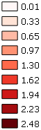

Zeespiegelstijging is één van de meest bekende gevolgen als er gesproken wordt over klimaatverandering. Hoewel wij in Nederland een van de beste watermanagers zijn, stijgt de kans op een dijkdoorbraak of rivier overstroming aanzienlijk.
Het thema waterveiligheid gaat over de vraag hoe veilig wij achter onze dijken zitten. Deze vraag wordt beantwoord aan de hand van een drietrapsstrategie, met als eerste ‘trap’: preventie. In deze laag wordt een overstroming voorkomen door stevige dijken en voldoende ruimte voor rivieren.
De tweede laag betreft het beperken van de gevolg bij een dijkdoorbraak. Hierbij kan gedacht worden aan een slimme inrichting van de gevoelige locaties of het water robuust bouwen, wat gebouwen niet kwetsbaar maakt voor water.
De laatste laag betreft de beheersing van een ramp. Het zorgen voor voldoende vluchtroutes en juiste evacuatieplannen zijn onderdelen hiervan.
Op de kaart
Waterstijgsnelheid
De laag waterstijgsnelheid gaat uit van een dijkdoorbraak van de Lek. De stijgsnelheid geeft aan, hoe snel het water op die plaatsen stijgt.
Legenda
Waterstijgsnelheid (m/uur)
- 